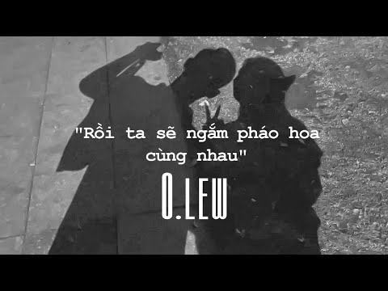

Rồi ta sẽ ngắm pháo hoa cùng nhau
Song by Olew
Original video:

Lyrics:
Người đón em đến bên đời là điều tuyệt nhất để khiến em cười
Người cứ như ô che mưa, như mây bay qua cho ngày trong xanh.
Ở đây có anh này em thật nhỏ bé trong chiếc ôm này
Ấm hơn chăn mà, còn thơm hơn hoa mà sao em nỡ rời xa.
Chorus:
Rồi ta sẽ ngắm pháo hoa cùng nhau trên tầng thượng phía bên kia dòng sông
Vạn lời chúc ấm êm cho nhau là sẽ thành đôi sau vài cái xuân
Mong trời sẽ thương em thương anh và cho đôi mình mãi bên nhau dài lâu
Cho dù thế gian kia cuồng quay trăm bộn bề ta vẫn không cách rời.
Thấy anh đứng đây rồi, mắt cười cong khóe mi hý đây rồi
Càng đắm say thế nên em lại sợ một mai mình rời xa nhau.
Anh thơm vào má em này cho chừa cái thói nói vớ vẩn này
Mặt ngây ngô ra rồi còn anh thì đứng cười
Đây có phải là điều tuyệt nhất.
Chorus:
Rồi ta sẽ ngắm pháo hoa cùng nhau trên tầng thượng phía bên kia dòng sông
Vạn lời chúc ấm êm cho nhau là sẽ thành đôi sau vài cái xuân
Mong trời sẽ thương em thương anh và cho đôi mình mãi bên nhau dài lâu
Cho dù thế gian kia cuồng quay trăm bộn bề ta vẫn không cách rời.
Dù mai mặt trời không chiếu sáng trên hành tinh này
Thì em vẫn sẽ tìm thấy anh bằng trái tim này
Dù mai đời,người dẫu có cách ngăn tình ta
Thì em xin một lần không tên, nguyện yêu anh một đời an yên.
Copyright ©Ankun Edogawa. All right reserved.
Contact me: No license.